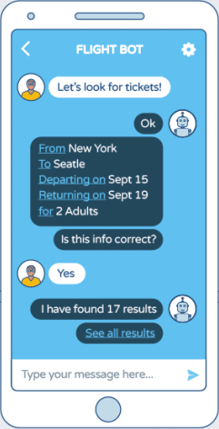
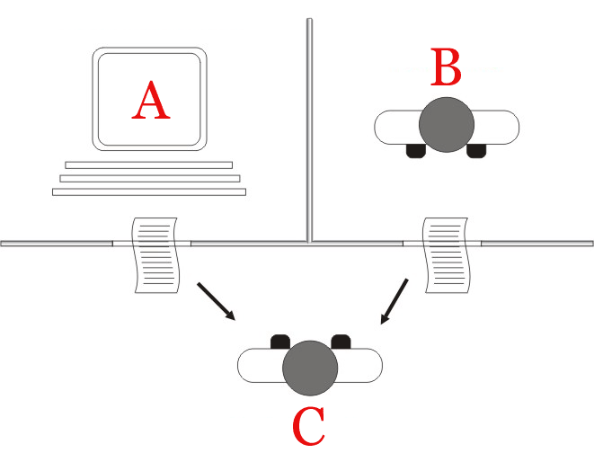

Introducción a los chatbots
Por Alberto Fernández Valiente
¿Qué es un chatbot?

- Agente software conversacional
- Computing Machinery and Intelligence (1950) - Alan Turing
- El "juego de la imitación"
- Eliza (1966) Primer chatbot
El test de Turing

- Dos sujetos, un ordenador y un humano
- Un evaluador independiente aislado de ellos
- Canal de comunicación textual
- ¿Puede el evaluador identificar cuál de los dos es la máquina?
Los tres ejes básicos
- Detección de la intención del usuario
- Extracción de entidades
- Flujo de diálogo
¿Qué podemos utilizar para crear un chatbot?
- Procesamiento del lenguaje natural
- Técnicas de aprendizaje automático
Procesamiento del lenguaje natural
- Tokenización de palabras
- Análisis de la estructura sintáctica
- Creación de un corpus lingüístico propio
Técnicas de aprendizaje automático
- Clasificador
- Word2Vec
- Creación de un conjunto de entrenamiento
¿Cómo construimos las respuestas?
- Base de datos de respuestas
- Ampliación de respuestas con contenido propio
¿Cómo creamos nuestro propio chatbot?
- Productos comerciales: Dialogflow, Wit.ai, Amazon Lex, IBM Watson
- Motores software libre: Rasa NLU, Snips NLU